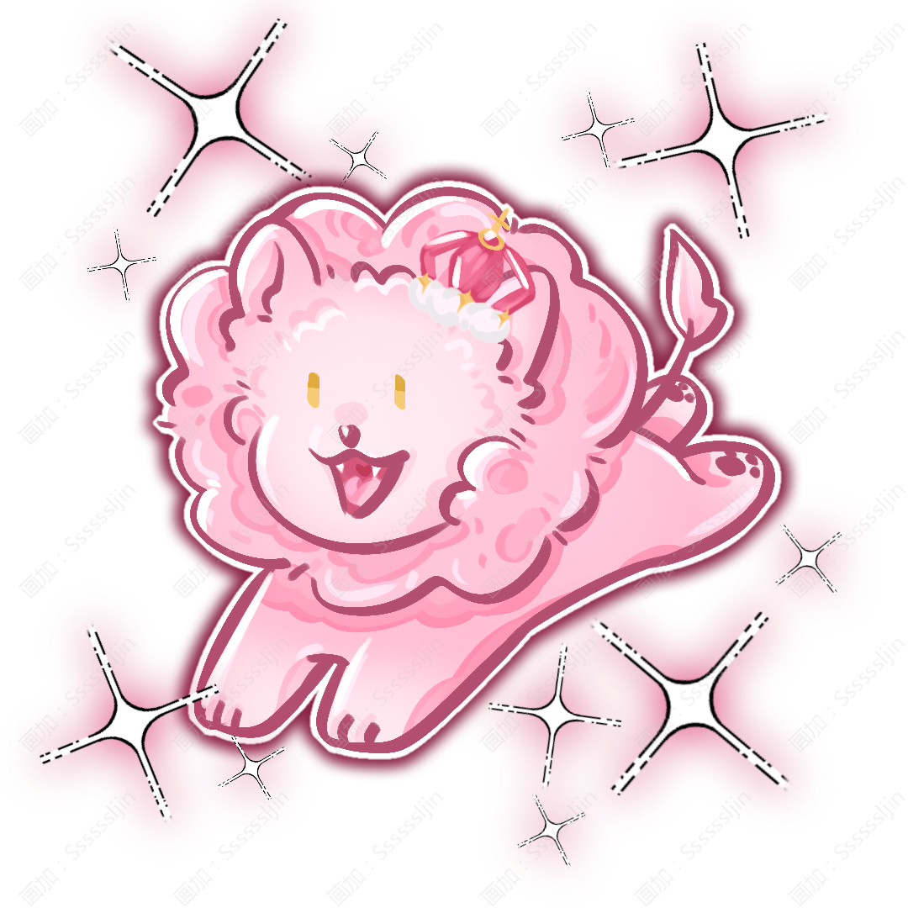

而是因爲所有能保護她的人，都已經不在了。」
基本資料
姓名：寓幽·薇拉·艾靈。
英文：Yuyou · Vera · Ailing。
種族：人類 × 獅系真裔混血。
性別：女。
生日：1月10日。
年齡：十六歲旅行；十九歲登基。
居住：艾爾德利亞的皇宮。
外貌
身高：162cm。
體重：54kg。
外貌：愛心形呆毛，粉色漸變白色的頭髮，金黃色瞳孔，人類血脈偏高；只有獅耳，且她除了睡覺其餘時間都不露出來。
性格
溫柔、善良、堅韌。
（從小被寵愛長大，卻從未因此任性。面對他人時，總是願意理解和包容。經歷戰爭後，她變得更加沉穩、堅強，將情緒藏在心底，即使揹負痛苦，也會選擇獨自承擔）。
身份
艾爾德利亞繼承人，後爲女皇。
同時是瑟蘭迪斯公主。
世界頂尖綜合學院著名畢業生。
前學院冠軍團隊成員。
學院長期重要支持方代表。
喜好
甜點。
理想
希望可以遊歷世界，開一家屬於自己的甜品店。
專長
劍術、政治上的事、屬性控制，可以三屬性一起用。
属性面板
力量：★★★☆☆
體力：★★★★☆
智慧：★★★★☆
魅力：★★★★☆
幸運：★★★☆☆
能力
武器：劍。
屬性：星星、光、暗。
技能：
「星落」
將星屬性匯聚在劍刃上揮出，劍光離開劍身後化爲數道星芒，可以改變方向繼續追擊目標。
「晝輝」
以光屬性覆蓋劍身，並在揮劍時展開一道光幕。既可以擋下攻擊，也可以瞬間爆發強光干擾敵人。
「夜蝕」
暗屬性沿劍刃擴散，在周圍形成短暫的暗域，削弱敵人對距離與方向的判斷；寓幽自己的行動則不會受到影響。
大招「星夜」
寓幽同時釋放星、光、暗三種屬性。周圍先被暗色覆蓋，隨後大量星光在其中亮起，最後所有星芒隨着她揮劍的方向集中落下。
特殊能力：寓幽可以將星、光、暗同時注入劍中，卻不立即釋放。暗屬性首先覆蓋周圍，將敵人的攻擊軌跡與位置顯現出來；星屬性在黑暗中留下無數細小光點，標記周圍的人與道路；最後光屬性沿着這些星點連接展開。她揮劍時，光會沿着星留下的軌跡擴散，在混亂的戰場上形成一片短暫的安全區域。
血脈特徵：獅耳可自由隱藏。
隨行靈獸
桃絨。
種類：獅系靈獸。
屬性：花。
桃絨是一頭通體粉色的獅系靈獸。全身毛髮、鬃毛、耳朵、四肢與尾巴均爲粉色，其中鬃毛顏色稍深，毛髮十分柔軟蓬鬆；眼睛爲金色。成年後體型比普通獅子稍大。
它原本是一隻生活在艾爾德利亞與瑟蘭迪斯交界花田附近的幼年獅系靈獸。寓幽小時候跟着家人經過那裏時，它不知道爲什麼一路跟着她的馬車跑，趕走以後又會偷偷跟回來。最後寓幽蹲下來問它：“你是想跟我回去嗎？” 它就自己爬上了馬車跟着寓幽回去了！
性格溫順、黏人、慢吞吞，還有些懶。平時喜歡曬太陽和趴在寓幽身邊睡覺，看起來幾乎沒有獅子的威嚴；但真正遇到危險時會立刻變得警覺，並主動保護寓幽。
桃絨無法像靈契夥伴一樣感應寓幽的情緒，只是因爲陪伴她太久，已經非常熟悉她的習慣和細微表情。有時其他人完全沒有發現寓幽心情不好，桃絨卻會自己走到她身邊趴下。
寓幽小時候偶爾會嫌王室典禮使用的皇冠太重，一離開大人的視線便把皇冠摘下來放到桃絨頭上。桃絨最開始不知道那是什麼，只因爲寓幽很開心便乖乖頂着。後來它逐漸養成習慣，只要寓幽往它頭上放東西，就會下意識坐好等着。
能力：
「絨護」：釋放花屬性，使花瓣與靈性環繞身體形成短暫屏障，爲附近的人抵擋部分攻擊。
「花徑」：奔跑時催動沿途植物生長，使藤蔓與花枝阻擋、纏繞目標，也能留下明顯的前進路線。